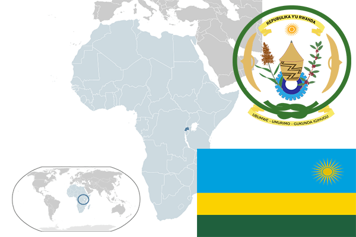

To`liq nomi: Ruanda Respublikasi
Region: Sharqiy Afrika
Qonunchilik shakli: Respublika
Mustaqillik kuni: 1 iyul 1962 (Belgiyadan)
Poytaxt: Kigali
Maydoni: 26,338 km²
Chegaradosh davlatlari: Tanzaniya, Burundi, Uganda, Kongo.
Aholisi: 12 012 589 (2013-yil)
Aholi zichligi: 421 /км²
Aholining o`rtacha yoshi: 64,54 yil
Rasmiy tili: Kinyaruanda tili, Ingliz tili
Dini: Xristian
Pul birligi: Ruanda franki
Telefon prefiksi: +250
Internet domen: .rw
Xalqaro tashkilotlarga a`zoligi: BMT (1962-yil)
Dengiz va okeanlarga chiqishi: Yo’q
YIM: Butun: $8.9 mlrd. (2017-yil) Jon boshiga: $754
Yirik shaharlari: Kigali, Butare, Gitarama.